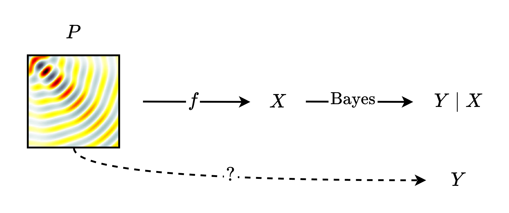

From Limits on Sensing to Limits on Perception
Introduction
Sensing is a prerequisite for intelligent behavior, serving as the interface between external and internal worlds. In this essay, I analyze some basic concepts describing limits on sensing, and describe a re-framing grounded in information theory to identify situations where we can overcome those limits.
Sensing and Perception
First, I'll introduce two terms that we'll use throughout the essay: sensing and perception. Let's define sensing as the act of measuring some physical process that exists out in the world. Imagine one or more sensors that record signals from the environment at certain points in time and space. We'll refer to this raw sensor data as $X$. Let's then define perception as a kind of superset of sensing, where we measure some raw signals from our sensors, but then also include a processing layer on top to infer some quantity of interest $Y$ that is meaningful to us. In the case where the raw sensor data is already the quantity of interest and processing is unnecessary, perception would then amount to sensing. In general, though, we can imagine that the perception step may perform arbitrary computation as a layer on top of sensing. An important consequence of this definition is that it permits a prior on $Y$. In other words, we can use prior knowledge and theory to infer more about $Y$ than might be available from measurements alone.
What is the aim of sensing?
We proceed by considering: What is the ultimate aim of sensing? I argue that sensing ultimately serves perception: our goal is always to know some quantity of interest, which we'll call $Y$. Let's then imagine that we have some ground-truth physical process $P$ that we believe will tell us something about $Y$, and that we use a sensing system $f$ to measure $P$, producing some raw sensor data $X$ (I leave the relationship between $P$ and $Y$ unspecified for now; considering different causal scenarios here remains an open question). We can quantify the information available about $Y$ using the posterior entropy $H(Y \mid X)$, which measures how uncertain we are about $Y$ having acquired raw sensor data $X$ and processed it using exact Bayesian inference to compute $p(Y \mid X)$. If we want to know as much as possible about $Y$, we should aim to minimize this quantity. We'll then treat this minimization problem as a way of formalizing this aim of knowing about $Y$. There are many possible formulations of the posterior entropy, relating it to various other information-theoretic quantities, but we will consider the following: $$ H(Y \mid X) = H(Y) - I(Y ; X) $$ Here we can read the posterior entropy as no more than the prior entropy $H(Y)$ minus the mutual information $I(Y ; X)$. $H(Y)$ tells us how uncertain we are about $Y$ before having observed any sensor data, and $I(Y; X)$ tells us how much uncertainty we can remove from the prior by performing Bayesian inference. In order then to minimize the posterior entropy, we have two options: 1. Decrease the prior uncertainty. This could be achieved by learning some new theory that allows you to rule out potential values for $Y$ a priori. For example, imagine you learn that $Y$ must be a positive number, where previously you thought that it could be positive or negative. With this new knowledge, you've managed to halve the size of your prior entropy! 2. Increase mutual information. Given $X$, the mutual information is not something we can increase -- it is just a fixed quantity. But recall that $X$ is a function of $P$ controlled by our sensing system $f$. This means that by changing $f$, we can in turn change $X$ so as to increase its mutual information with $Y$.

From limits on sensing to limits on perception
Finally, what are the limits on sensing, and how do they relate to those on perception? While there are some processes in the universe that can't be sensed even in principle, there are also more practical conditional limitations, describing the sensing limits as a function of some features of the sensing system, which will be our focus here. Specifically, we'll focus on two familiar limitations, and provide a path for moving beyond these limitations by reframing them in terms of perception rather than sensing.
1. The Nyquist limit
Firstly, let's consider the Nyquist limit. Typically this is presented as the Nyquist rate or frequency, but here I consider its implications as a limit on the knowledge about the spectrum given a certain sampling frequency. It states that unless we sample the signal at a certain rate $N$, the problem of recovering the frequency content of our signal will become ill-posed, with more than one underlying sinusoid creating the same sampled values. Using our model above, if $f$ contains a sampling operation, the Nyquist limit tells us that sampling below $N$ will introduce uncertainty about the spectrum, which we may depend on for knowledge about $Y$. Formally, this influences our mutual information via the likelihood function relating $Y$ to $X$: we now have different frequency components leading to the same samples, enabling us to rule out fewer values for $Y$ via measurements alone, and limiting the amount of information we can gain. But what if we introduce a prior on $Y$, ruling out certain frequency components a priori? By generalizing our goal from sensing to perception, and incorporating prior knowledge, we can overcome the Nyquist limit, transforming it rather into a subsampling problem whose solubility depends on prior knowledge. This idea has been further explored in the field of compressed sensing, among others.
2. The diffraction limit
Next let's consider another limit on sensing, this time from the world of imaging. When we send a wave through a finite slit or aperture in space, interference creates a so-called diffraction pattern. A similar process happens when receiving waves with an array of sensors, creating blurring and patterning artifacts around what would otherwise be crisp points in our image, given an infinite aperture. The crisp points are spread out by a point-spread function (PSF). From this effect comes the diffraction limit, which quantifies the minimum distance that two points can be from one another while still being resolvable as two distinct points. In that sense, this is a limit on resolution. The limit states that our angular resolution will be defined by: $\theta \propto \frac{\lambda}{D}$ where either decreasing our wavelength $\lambda$ or increasing our aperture size $D$ will give us finer resolution $\theta$. The problem with this limit is that it ignores the role of computation in perception. If the PSF is known, perception becomes an inverse problem: infer the most likely underlying scene from the observed image. Again, strong priors on $Y$ and accurate forward models enable us to go far beyond the diffraction limit, as explored in the field of super-resolution microscopy, among others.
Closing Thoughts & Open Questions
I have argued here that we should situate sensing problems within the broader goal of perception, and view the limiting factors first and foremost in information-theoretic terms. The key insight offered by this framing is that we can trade information gained by our sensing system for prior information or superior algorithms -- a design principle which can hopefully guide us toward more cost-efficient sensing systems.
I will conclude with some open questions, which may end up making their way into the main essay in future iterations: - Exact Bayesian inference is often intractable, especially for high-dimensional signals like images or videos. How does the information gained by approximate inference algorithms relate to the mutual information? Can we understand this as an instance of bounded rationality, leading to an understanding of how compute can be traded for sensing hardware? - Can we make some assumptions about the nature of the relationship between $P$ and $Y$? For example, $Y$ may be a function of $P$ but not of $X$, or $Y$ and $P$ may both be a function of some common causal ancestor. Do these situations enable some interesting information-theoretic analysis? - What role does the forward model $p(X | Y=y)$ play in this? What about under a sim-to-real gap?
Remaining todos, for future iteration
- The diffraction limit example could do with some fleshing out / nuance.